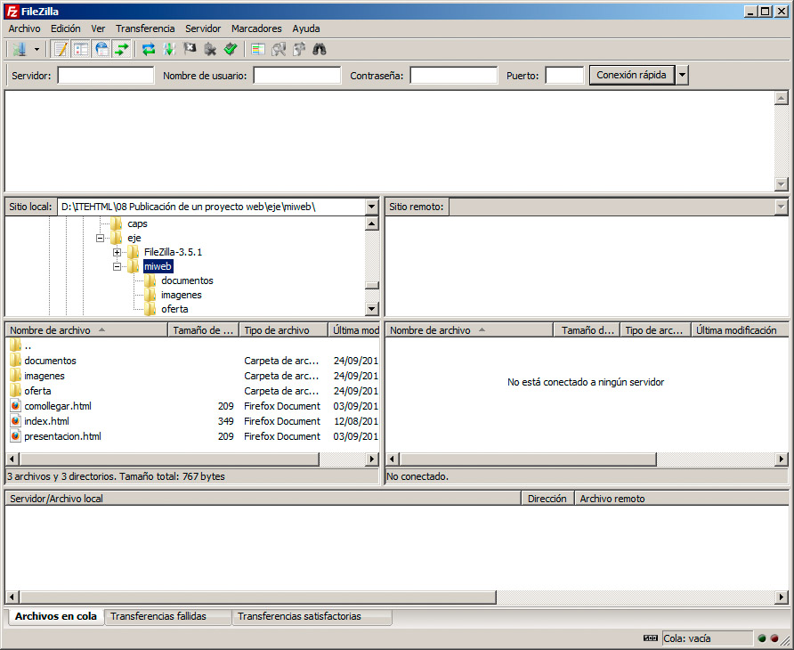

Este matiz nos indica que para enviar las páginas web al servidor, normalmente emplearemos una aplicación de transferencia FTP. En nuestro caso emplearemos para nuestras pruebas Filezilla, que es software libre y multiplataforma, por lo que la podremos utilizar sin coste alguno desde cualquier sistema operativo.
En la página de Filezilla encontraremos también para Windows una versión zip, que ni siquiera requiere instalación; basta con descomprimirla y ejecutarla.
Una vez descargada, procederemos a instalarla con los métodos habituales. Filezilla nos mostrará su pantalla inicial, recogida en la figura:

Tras elegir el idioma, podremos empezar a trabajar con normalidad. El espacio se distribuye de la siguiente manera:
- En la parte izquierda encontramos un explorador de archivos que nos muestra el contenido de nuestro ordenador. Con él podremos desplazarnos hasta la carpeta que contiene nuestro sitio web.
- La parte derecha nos mostrará las carpetas de nuestro servidor web. Allí aparecerán los archivos que hayamos transferido y podremos editarlos, modificarlos, borrarlos o realizar cualquier operación que necesitemos.
- El panel superior presenta los mensajes que emite el servidor. Es información administrativa, que sólo nos interesará si se produce alguna incidencia.
- En el panel inferior veremos información sobre las transferencias de archivos que queden pendientes, errores al transmitir algún archivo, etc.
Por tanto el procedimiento se resume en tres pasos:
1. Conectar con el servidor web, llamado normalmente el servidor remoto.
2. Seleccionar los archivos que nos interesan en el panel local, el panel de la izquierda.
3. Transferirlos al servidor, arrastrándolos hasta el panel derecho.
Tras realizar esos pasos, nuestra web estará ya visible desde la dirección http:// correspondiente.
Pregunta de Elección Múltiple
|
Es un método sencillo de transmisión de archivos basados en un navegador.
| |
|
Es la transferencia de archivos teniendo en cuenta un conjunto de normas.
| |
|
Consiste en transferir archivos con la extensión .ftp
|